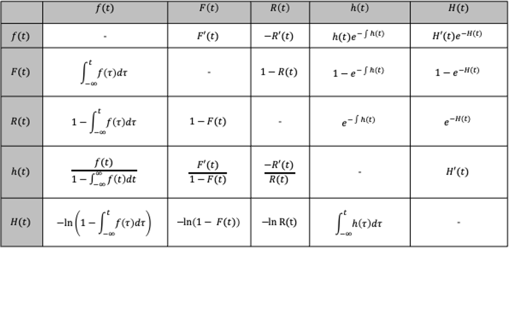
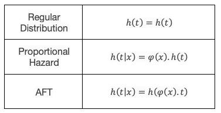

Handy References - Aide-mémoire¶
Relationship between functions of a probability distribution¶
There exists a relationship between each of the functions of a distribution and the others. This can be very useful to keep in mind when understanding how surpyval works. For example, the Nelson-Aalen estimator is used to estimate the cumulative hazard function (Hf), the below relationships is how distribution for this can be used to estimate the survival function, or the cdf.

The above table shows how the function on the left, can be described by the function along the top row (I leave out the function describing itself as it is simply itself…). So, an interesting one is that the reliability or survival function, R(t), is simply the exponentiated negative of the cumulative hazard function! This relationship holds for every distribution.
AFT, AL, or PH?¶
What is the difference, if any, between an Accelerated Failure Time model, an Accelerated Life model, and a Proportional Hazard model? SurPyval uses the distinctions defined in [Bagdonavicius]. The explanation of these are:
ALT is an accelerated life model. That is, a model where the ‘characteristic life’ of the distribution is a function of the stress or stresses applied to the system. Another way to describe it is that, for two different stresses and two different times, t1 and t2, if the probability of failure at the times is the same.
AFT is an Accelerated Failure Time model. This is simply a distsribution where the time is multiplied by a function of covariates. This has the effect of ‘accelerating’ the time. Concretely, for a function \(f(t)\) it can be accelerated with a function to give \(f \left ( \phi \left ( x \right ) t \right )\).
PH is a proportional hazard model. In a proportional hazard model, the hazard function is multiplied by some function of covariates. Hence if a function has a hazard rate of \(h(x)\) then the proportional hazard model will give simply \(\phi \left ( x \right ) h(t)\).
SurPyval has implementations, and even a general constructor, for AFT, AL, and PH models. Each of which can handle arbitrary censoring (truncation coming).
How an AFT and PH Model Relate to a regular distribution¶
An AFT, or accelerated failure time, model does exactly that. It ‘accelerates’ the actual time by multiplying the time in the hazard function by a function of factors, \(\phi \left( x \right )\). This factor can be any function. A Proportional Hazard model also does exactly what it says, if changes the hazard rate by a particular proportion.

Given the relationship between variables and a distribution with either the PH or AFT models, you can see, using the above relationships that the survival, failure, and density functions can all be determined. This relationship is good to know to understand how AFT and PH models work.
References¶
Bagdonavicius, V., & Nikulin, M. (2001). Accelerated life models: modeling and statistical analysis. CRC press.